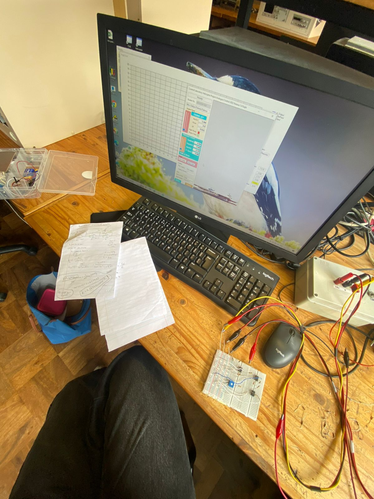

Skills & Experience
A quick look at hands-on skills and contexts I’ve worked in.




Executive Member — UCT AI Society
Jun 2023 – Present
Founded community; ran expert panels.
Secretary General — EWB-UCT
Nov 2022 – Nov 2023
Human-Centred Design workshop; first-year orientation.
Women Accelerate — Bain & Company
Dec 2023
Leadership & strategy intensives.
RPA Team — Old Mutual
Jul 2023
Bizagi & Blue Prism; JSON/API integrations.
Junior Electronics — SARAO
Jun 2022
CNC wiring; PCB build/test; I²C/SPI/UART; Python plots.
Course Tutor — UCT EE
Aug – Nov 2023
EEE1007S: power, renewables, circuits.